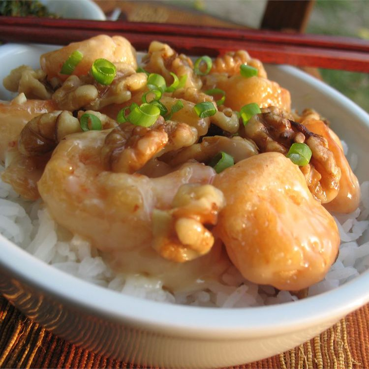

Honey Walnut Shrimp

Description
Honey walnut shrimp seems like it is really popular in the United States. At first I thought it was a really Americanized dish.
Though it is always really good so I keep ordering it.
Ingredients
- 1 cup of water
- 2/3 cup white sugar
- 1/2 cup walnuts
- 4 large egg whites
- 2/3 cup mochiko
- 1 pound of large shrimp
- 1/4 cup of mayonnaise
- 2 tablespoons of honey
- 1 cup of vegetable oil for frying
Steps
- Stir together water and sugar in a small saucepan over high heat. Bring to boil and add walnuts. Boil for 2 minutes, then drain and place walnuts on a cookie sheet to dry.
- White egg whites in a medium bowl until foamy. Stir in mochiko until it has a pasty consistency.
- Heat oil in a heavy deep skillet over medium-high heat.
- Dip shrimp in mochiko batter, then fry in the hot oil until golden brown, about 5 minutes.
- Stir shrimp together in mayonnaise and honey. Sprinkle walnuts.